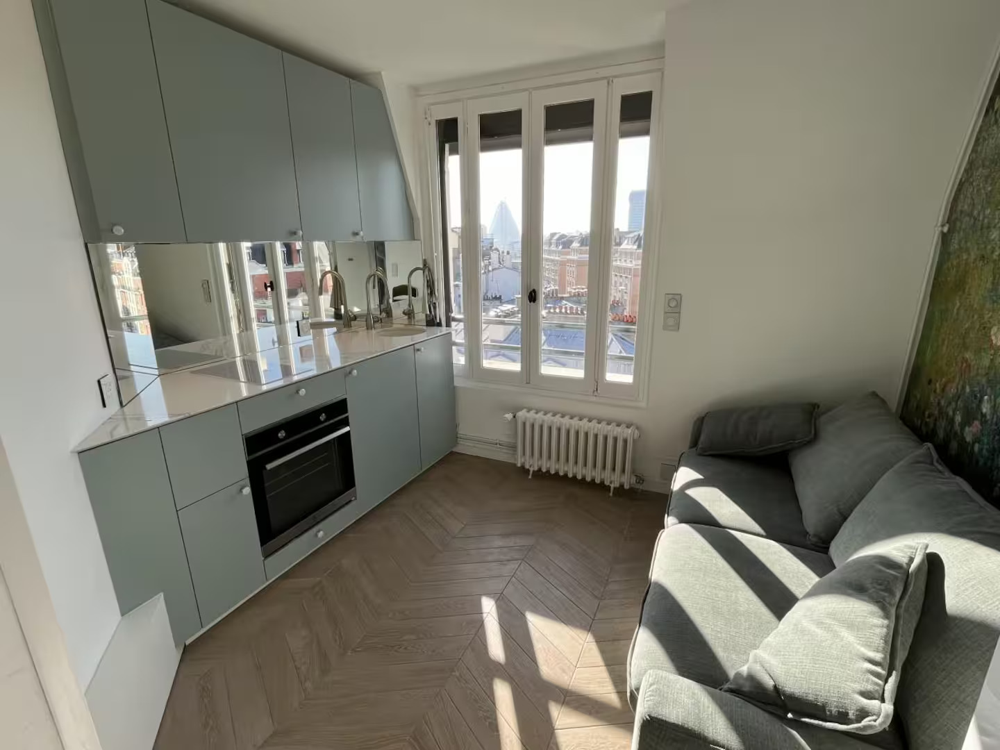
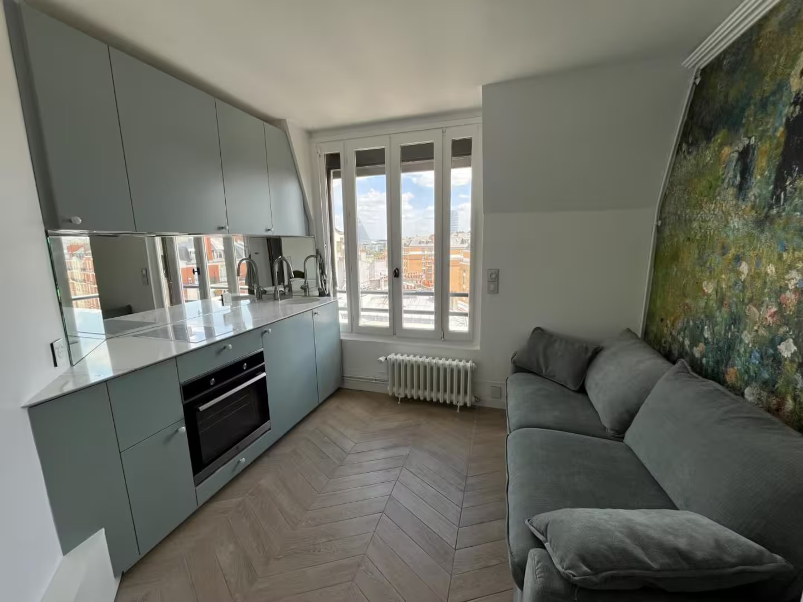
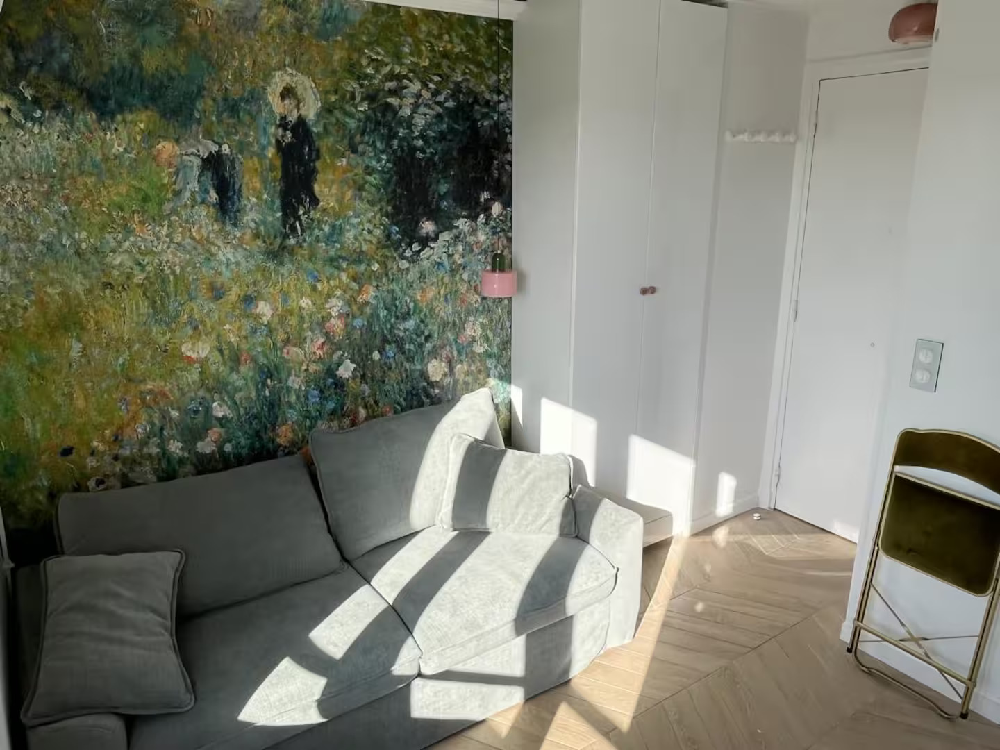
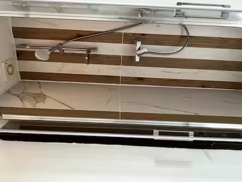
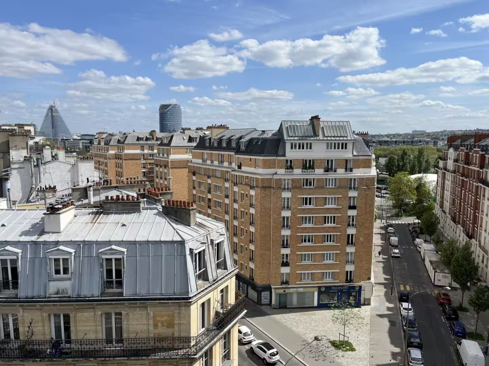

Studio Murat
Une chambre de bonne réinventée au cœur du 16e arrondissement de Paris. Proche du Parc des Princes – Parfait pour les matches du PSG !

Le Studio
Bienvenue dans notre petit nid parisien. Ce studio est une ancienne chambre de bonne, soigneusement rénovée, située sous les toits du 8e étage de notre immeuble (ascenseur jusqu’au 7e étage, puis un escalier). Il a été pensé comme un cocon : compact, lumineux, et chaleureux avec sa fresque inspirée de Renoir qui habille le mur du fond.
Galerie

Cuisine équipée avec vue sur Paris

Canapé-lit et fresque inspirée de Renoir

Salle de bain avec douche italienne

Vue sur les toits de Paris
Description détaillée
Ce studio est une ancienne chambre de bonne, soigneusement rénovée, située sous les toits du 8e étage de notre immeuble (ascenseur jusqu’au 7e étage, puis un escalier). Il a été pensé comme un cocon : compact, lumineux, et chaleureux avec sa fresque inspirée de Renoir qui habille le mur du fond.
Nous, c'est Marie & Philippe — Parisiens d'adoption, jeunes parents de la petite Pauline et du petit Gauthier. Nous habitons l'appartement du 5e étage. Si nous sommes là pendant votre séjour, n'hésitez surtout pas à toquer ou à nous écrire : nous serons ravis de vous rencontrer et de partager nos meilleures adresses du quartier.
Équipements
Canapé-lit : Se transforme en un véritable lit double (140×190 cm) en quelques secondes, avec un matelas confort intégré.
Kitchenette : Plaque à induction 2 feux, four électrique multifonction, réfrigérateur/mini-congélateur, hotte aspirante, bouilloire, grille-pain, mixeur plongeant, cafetière à dosettes.
Salle de bain : Douche italienne aux carreaux marbre & bois, lavabo en céramique, miroir éclairé, VMC automatique. Serviettes, gel douche, shampooing et après-shampooing fournis.
Confort : Wi-Fi haut débit, radiateur électrique, table pliante astucieuse sous le canapé.
Accès : Clé du studio dans un coffre à clés près de la porte (code communiqué 24h avant l’arrivée).
WC : Les toilettes sont sur le palier, en face de la porte du studio (partagées avec une autre chambre).
À votre disposition
Cuisine : Sel, poivre, huile d'olive, sucre, café (dosettes), thé, tisane.
Salle de bain : Papier toilette de réserve, savon liquide pour les mains.
Astuce : L'eau du robinet à Paris est parfaitement potable et excellente.
Localisation
Vous séjournez dans la partie sud du 16e arrondissement, à la limite d'Auteuil et de la Porte de Saint-Cloud. C'est l'un des quartiers les plus tranquilles, élégants et résidentiels de Paris : boulangeries, cafés, marchés, et de très nombreux espaces verts. Proche du Parc des Princes – Parfait pour les matches du PSG !
Adresse
129 bis Boulevard Murat, 75016 Paris – 8e étage
Points d'intérêt à proximité
À deux pas
Parc des Princes (stade du PSG) — 8 min à pied
Parc de l'Île Saint-Germain — 17 min à pied
Bois de Boulogne (entrée Porte d'Auteuil) — 15 min à pied
Hippodromes d'Auteuil & de Longchamp — 20 min à pied
Stade Roland-Garros — 25 min à pied / 12 min en métro
Marché en plein air
Marché de l'Avenue de Versailles — mardis, jeudis et dimanches matin. Producteurs locaux, fromagers, primeurs, fleuristes.
Le caractère du quartier
Le 16e sud a une atmosphère particulière : très parisien, élégant sans être guindé, plus calme que le centre, avec ce charme provincial des quartiers où tout le monde se salue chez le boulanger.
Transports
Métro Ligne 9 — Porte de Saint-Cloud : 3 min à pied · Centre de Paris en 25 min · Trocadéro / Champs-Élysées en 15 min
Métro Ligne 10 — Chardon-Lagache / Mirabeau : 8 min à pied · Quartier latin en 20 min
Bus 22 / 62 / 72 : Arrêt face à l'immeuble · Le 72 longe la Seine et passe par le Louvre
Vélib' : Station à l'angle Bd Murat / Av. de Versailles, à 50 m · Vélos mécaniques et électriques
Depuis les aéroports
Roissy CDG : RER B depuis Saint-Michel (40 min) ou taxi (~60 €, 35-50 min)
Orly : Tramway T3a depuis Pont du Garigliano + bus Orlyval, ou Uber (~35 €, 25-40 min)
Notre conseil
Téléchargez l'application BonjourRATP avant votre arrivée : itinéraires en temps réel, achat de tickets directement depuis le téléphone (en NFC). Un pass Navigo Easy (rechargeable) à la station Porte de Saint-Cloud est très pratique pour un séjour de plusieurs jours.
Tarifs & Réservation
100€/nuit – Tarif dégressif à partir de 3 nuits (nous contacter pour un devis personnalisé).
Le départ est à 11h00 (sauf accord préalable). Pour que tout se passe au mieux, merci de suivre la check-list de départ.
Check-list de départ
Replier le canapé-lit (laisser le linge dedans, nous nous en occupons)
Nettoyer, sécher et ranger la vaisselle
Sortir les poubelles : poubelle publique au pied de l'immeuble (à 30 m sur la droite en sortant)
Vider le réfrigérateur des denrées périssables
Éteindre le radiateur (position 0)
Fermer les volets aux 3/4 (laisser un peu entrouvert)
Mettre la fenêtre en position oscillo-battante (si la météo le permet)
Éteindre toutes les lumières
Refermer la porte du studio à clé
Remettre la clé dans le coffre — code 0000 par défaut
Si vous souhaitez un départ tardif (late check-out), n'hésitez pas à nous le demander la veille — nous l'accordons quand c'est possible.
Réservation
Vous pouvez réserver vos prochains séjours directement avec nous : un tarif préférentiel vous sera accordé pour les réservations en direct.
Réservation par WhatsApp ou téléphone :
Philippe : +33 6 67 28 35 76
Marie : +33 6 68 06 28 43
Appeler maintenantRègles de la maison & Infos pratiques
Règles à respecter — sans exception
Strictement non-fumeur — y compris à la fenêtre (les voisins sont sensibles à l'odeur)
Pas d'animaux
Pas de fête, pas de visiteur supplémentaire la nuit
Calme entre 22h et 8h — les voisins du palier sont sensibles au bruit
Pas de bougies, pas d'encens
Avec délicatesse
Le mobilier a été choisi avec soin — merci d'en prendre soin
La fresque murale Renoir est imprimée sur papier peint : éviter de la frotter ou de coller quoi que ce soit dessus
Cuisinez librement, mais pensez à allumer la hotte pour les odeurs
Important — Sécurité
Toujours bien refermer la porte d'entrée à clé en sortant
Ne pas laisser la fenêtre ouverte en grand sans surveillance (oscillo-battant possible)
Détecteur de fumée au plafond : ne pas le couvrir
Codes & Accès
Porte d'immeuble : Code d'entrée — à inscrire au crayon
Étage du studio : 8e étage · ascenseur jusqu'au 7e, puis un escalier
Clé du studio : Dans le coffre à clés près de la porte — code communiqué par message 24 h avant l'arrivée
Notre porte : 5e étage, porte droite en sortant de l'ascenseur — n'hésitez pas à toquer
Numéros utiles & urgences
Vos hôtes — joignables 7j/7
Philippe Marion : +33 6 67 28 35 76 (WhatsApp / SMS / Appel)
Marie Marion : +33 6 68 06 28 43 (WhatsApp / SMS / Appel)
Urgences
112 : Numéro d'urgence européen — toutes urgences
15 : SAMU — urgences médicales
17 : Police-secours
18 : Pompiers — incendie, accident
Médical — pratique
Pharmacie de garde : App MonPharmacien (Ordre des pharmaciens) ou 3237
Médecin de garde : SOS Médecins · 36 24 — déplacement à domicile 24h/24
Hôpital le plus proche : Hôpital Européen Georges-Pompidou — 20 rue Leblanc, 75015 (8 min en taxi)
Adresses gourmandes
Boulangeries & pâtisseries
Le Sésame — la meilleure baguette « Tradition » du quartier (en face de l'immeuble — 128 Bd Murat)
Maison Belkheir — très bonnes pâtisseries (5 min — 209 av. de Versailles, 75016)
Maison Landemaine — très bons sandwichs / gâteaux (5 min — 197 av. de Versailles)
Pour bien déjeuner ou dîner
Le Cardinal — brasserie élégante, plats du marché
Le Mathusalem — bistrot de quartier, ambiance chaleureuse
Alégria — cuisine méditerranéenne, parfait pour un dîner décontracté
Villa Murat — 131 Bd Murat (en face) — pizzas excellentes à emporter, +33 1 46 51 26 68
Café & brunch
Sixtine Coffee Shop — notre adresse préférée pour un brunch ou un café de spécialité
Courses & supermarchés
La supérette en face de l'immeuble — pratique pour les petites courses du quotidien
Franprix — av. de Versailles — supermarché de référence du quartier
Marché Avenue de Versailles — mardis, jeudis, dimanches matin
Contact
Nous espérons sincèrement que vous avez passé un séjour à la hauteur de vos attentes — et même un peu mieux. Si quelque chose ne vous a pas plu, dites-le-nous : nous préférons mille fois apprendre les choses pour les améliorer. Et si tout vous a plu, un petit mot dans les commentaires fait toujours chaud au cœur 🍽️
Pour un prochain séjour : Vous pouvez réserver vos prochains séjours directement avec nous : un tarif préférentiel vous sera accordé pour les réservations en direct.
Philippe : +33 6 67 28 35 76
Marie : +33 6 68 06 28 43
Appeler maintenant